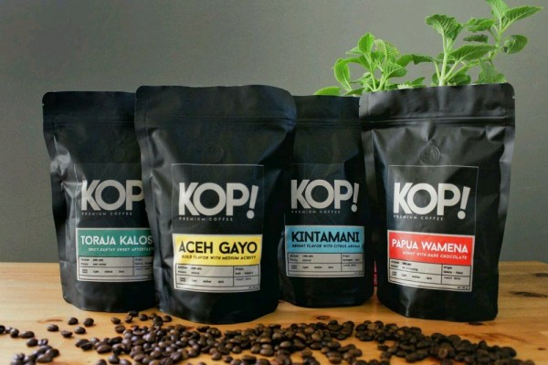

Jenis Kopi Lokal Asli Indonesia
Indonesia merupakan salah satu negara penghasil kopi terbaik, bahkan produksi tahunan yang mencapai 600 ribu ton mampu menyuplai tujuh persen kebutuhan kopi dunia. Menurut data Kementerian Pertanian RI (Kementan RI), Indonesia merupakan produsen kopi terbesar di dunia, setelah Brasil dan Kolombia.
Pemerintah menyatakan setidaknya ada 16 jenis kopi yang diminati pasar internasional. Bertepatan dengan Hari Kopi Internasional yang jatuh setiap 1 Oktober, yuk kenali tujuh kopi yang paling favorit berikut ini!
1. Kopi Arabika Gayo, Sumatera
Kopi asal Aceh ini teksturnya lebih encer alias tak terlalu pekat dengan tingkat keasaman seimbang. Cocok untuk kamu yang bukan penyuka kopi asam. Masyarakat Aceh punya cara penyajian tardisional yang khas. Bukan diseduh, tapi kopi dan air direbus dalam panci hingga mendidih, lalu dituang ke dalam gelas berisi susu dan gula.
2. Kopi Arabika Kintamani, Bali
Kopi Kintamani menjadi salah satu kopi yang populer di Jepang, Eropa, dan beberapa negara Arab. Tujuan ekspor utama kopi Kintamani memang di tiga negara tersebut. Rasanya unik karena dominasi asam citrus segar dan aroma wangi bunga, dengan tingkat keasaman dan kekentalan sedang.
3. Kopi Arabika Toraja
Beberapa negara yang menjadi tujuan utama ekspor kopi Toraja adalah Jepang dan Amerika, karena karakteristiknya unik, sesuai dengan kebiasaan minum kopi di sana. Kopi Toraja biasanya tidak menyisakan after taste pahit yang bagi sebagian orang terasa mengganggu. Sensasi pahit yang ditimbulkan bijih kopinya hanya ada di awal dan hilang dalam sekali teguk. Kopi Toraja dan mayoritas kopi lainnya yang tumbuh di Sulawesi cenderung punya rasa earthy, seperti rasa tanah atau hutan dengan kandungan asam rendah.
4. Kopi Arabika Java Ijen Raung
Satu kontainer kopi Java Ijen Raung khas Bondowoso pertama kali diekspor pada 2011, tapi popularitasnya di luar negeri kian meroket. Hingga 2016, Indonesia berhasil mengekspor 43 kontainer atau setara dengan 858,91 ton kopi. Kopi Java Ijen Raung punya ciri khas unik yakni rasa sedikit pedas dengan aroma bunga hutan. Tingkat asamnya sedang, tapi cenderung ke asam Jawa daripada citrus.
5. Kopi Liberika Rangsang Meranti, Riau
Berdasarkan situs disperin.riau.go.id, kopi Liberika dari Kepulauan Meranti telah menyabet sertifikasi Indikator Gegrafis (IG), dan dinyatakan sebagai salah satu hasil pertanian terbaik oleh Direktorat Jenderal Kekayaan Intelektual Nasional RI. Kopi ini sangat populer di Malaysia dan Singapura sebagai dua negara tujuan ekspor terbesar.
6. Kopi Arabika Flores Bajawa
Kekentalan cukup pekat, tapi tingkat keasamannya rendah. Berbeda dengan kebanyakan kopi di Indonesia, kopi Arabika dari kawasan Bajawa, Flores, Nusa Tenggara Timur, punya rasa dominan cokelat dan vanili dengan after taste yang sedikit nutty. Amerika adalah negara tujuan sebagian besar ekspor kosmoditas kopi Flores Bajawa.
7. Kopi Robusta Temanggung
Aroma cukup unik, yakni aroma tembakau dengan rasa pahit pekat dan mendominasi. Namun itulah yang membuat kopi khas Temanggung, Jawa Tengah, ini sangat autentik dan digemari. Bahkan pasar ekspornya sudah mencapai negara-negara Eropa, Timur Tengah, hingga Amerika Latin.